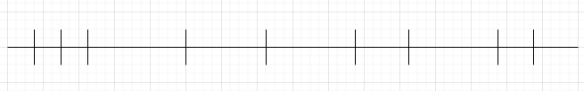
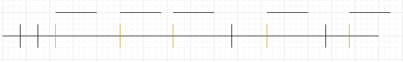
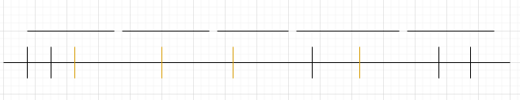
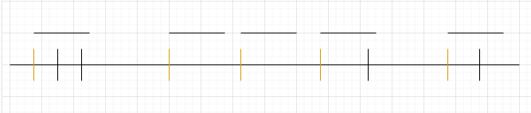
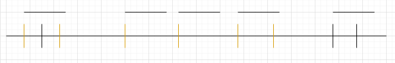

This post is part of series of comparing RxJava to Kotlin Flow. Previous articles were about Threading, Backpressure, Error Handling, Stream Types
It is advised to take a look at the overview of Throttling operators in RxJava before reading this article: Throttling in RxJava 2
Introduction
Throttling is also one of the essential features of reactive programming. Streams might emit more values than we’re expecting to receive, so ability to limit number of events in a stream is very important. Most common place where it applies is handling UI events. Examples of usage might be handling button clicks (to not allow double clicks), usage with search view when we’d like to wait for user to stop typing before querying some data and so on. In this article we’ll try to compare throttling operators in RxJava and Kotlin Flow.
Comparison
Setup
Before we start as before we’ll start from some setup. We’ll have stream with many events, which are emitted with delays (after previous) of 90, 90, 1010, 1010, 2000, 90, 1010, 80 milliseconds. It might be shown as such (scale doesn’t apply):

For RxJava we’ll have the following observable:
private fun observable(): Observable<Int> {
return Observable.create { emitter ->
emitter.onNext(1)
Thread.sleep(90)
emitter.onNext(2)
Thread.sleep(90)
emitter.onNext(3)
Thread.sleep(1010)
emitter.onNext(4)
Thread.sleep(1010)
emitter.onNext(5)
Thread.sleep(2000)
emitter.onNext(6)
Thread.sleep(90)
emitter.onNext(7)
Thread.sleep(1010)
emitter.onNext(8)
Thread.sleep(80)
emitter.onNext(9)
emitter.onComplete()
}
}
And for Kotlin Flow:
private fun myFlow(): Flow<Int> {
return flow {
emit(1)
delay(90)
emit(2)
delay(90)
emit(3)
delay(1010)
emit(4)
delay(1010)
emit(5)
delay(2000)
emit(6)
delay(90)
emit(7)
delay(1010)
emit(8)
delay(80)
emit(9)
}
}
In order to test various throttling strategies we’ll have the following test functions parametrized by operators.
For RxJava:
private fun testObservable(operator: Observable<Int>.() -> Observable<Int>) {
val latch = CountDownLatch(1)
val result = StringBuffer()
observable()
.operator()
.doOnComplete { latch.countDown() }
.subscribeOn(computation())
.subscribe { result.append(it).append(" ") }
latch.await()
println("$result")
}
And for Kotlin Flow:
private fun testFlow(operator: Flow<Int>.() -> Flow<Int>) {
val latch = CountDownLatch(1)
val result = StringBuffer()
CoroutineScope(Job() + Dispatchers.Default).launch {
myFlow()
.operator()
.onCompletion { latch.countDown() }
.collect { result.append(it).append(" ") }
}
latch.await()
println("$result")
}
In all the examples we’ll use timeout of 1000 milliseconds.
Debounce
First throttling operator which is useful for search queries (waits until some timeout expired before emitting value) is debounce. If we show expected result on a plot we’ll see the following:

So, in short after event received we start timer. If new event comes when timer is active, we restart timer. If timer expired then we emit latest item emitted.
So, we expect here to get events from 3, 4, 5, 7 and 9 events (with all other events throttled).
To achieve such result in RxJava we’ll need to use debounce operator:
testObservable { debounce(1000, TimeUnit.MILLISECONDS) }
With Kotlin Flow we’ll have to use same operator:
testFlow { debounce(1000) }
ThrottleLast
This mode starts timer with predefined interval and emit last emitted value when timer expires. After that it will restart timer.

Here we expect values of 3, 4, 5 and 7 to be emitted. Value 9 won’t be emitted in this case because stream would be finished before timer expired.
To get such behavior we’ll have to use throttleLast in RxJava and sample in Kotlin Flow:
testObservable { throttleLast(1000, TimeUnit.MILLISECONDS) }
testFlow { sample(1000) }
ThrottleFirst
This operator is useful to avoid double-clicks on buttons. It emits very first item and starts timer. All items which will come before timer expired will be discarded.

Here we would expect to receive events 1, 4, 5, 6, 8.
In RxJava we’ll use throttleFirst operator:
testObservable { throttleFirst(1000, TimeUnit.MILLISECONDS) }
In Kotlin Flow though there is no such operator, so we’ll have to write some implementation by our own. The implementation might look like this:
fun <T> Flow<T>.throttleFirstJava(periodMillis: Long): Flow<T> {
require(periodMillis > 0) { "period should be positive" }
return flow {
var lastTime = 0L
collect { value ->
val currentTime = System.currentTimeMillis()
if (currentTime - lastTime >= periodMillis) {
lastTime = currentTime
emit(value)
}
}
}
}
And the usage will be:
testFlow { throttleFirstJava(1000) }
ThrottleLatest
ThrottleLatest can be seen as some combination of throttleFirst and throttleLast. It will emit first item and start timer. Then when timer expires it would emit latest emitted value. But it won’t restart timer before new item emitted.

Here we expect values of 1, 3, 4, 5, 6, 7 to be emitted. Here value of 8 won’t be emitted because timer hasn’t expired after 7. And 9 won’t be emitted because stream completed before timer expired.
In RxJava we’ll use throttleLatest operator:
testObservable { throttleLatest(1000, TimeUnit.MILLISECONDS) }
In Kotlin Flow again there is no such operator, but we can try to write implementation by our own. Some java version which uses Timer can look like this:
fun <T> Flow<T>.throttleLatestJava(periodMillis: Long): Flow<T> {
return channelFlow {
var lastValue: T?
var timer: Timer? = null
onCompletion { timer?.cancel() }
collect { value ->
lastValue = value
if (timer == null) {
timer = Timer()
timer?.scheduleAtFixedRate(
object : TimerTask() {
override fun run() {
val value = lastValue
lastValue = null
if (value != null) {
launch {
send(value as T)
}
} else {
timer?.cancel()
timer = null
}
}
},
0,
periodMillis
)
}
}
}
}
It is quite big and uses Timer, which is based on Thread, so might not be good to be used in conjunction with coroutines.
We might want to write some version which uses coroutines only (similar to debounce):
@ExperimentalCoroutinesApi
fun <T> Flow<T>.throttleLatestKotlin(periodMillis: Long): Flow<T> {
require(periodMillis > 0) { "period should be positive" }
return channelFlow {
val done = Any()
val values = produce(capacity = Channel.CONFLATED) {
collect { value -> send(value) }
}
var lastValue: Any? = null
val ticker = Ticker(periodMillis)
while (lastValue !== done) {
select<Unit> {
values.onReceiveOrNull {
if (it == null) {
ticker.cancel()
lastValue = done
} else {
lastValue = it
if (!ticker.isStarted) {
ticker.start(this@channelFlow)
}
}
}
ticker.getTicker().onReceive {
if (lastValue !== null) {
val value = lastValue
lastValue = null
send(value as T)
} else {
ticker.stop()
}
}
}
}
}
}
And here we’ll have to create special Ticker implementation:
class Ticker(private val delay: Long) {
private var channel: ReceiveChannel<Unit> = Channel()
var isStarted: Boolean = false
private set
fun getTicker(): ReceiveChannel<Unit> {
return channel
}
fun start(scope: CoroutineScope) {
isStarted = true
channel.cancel()
channel = scope.produce(capacity = 0) {
while (true) {
channel.send(Unit)
delay(delay)
}
}
}
fun stop() {
isStarted = false
channel.cancel()
channel = Channel()
}
fun cancel() {
isStarted = false
channel.cancel()
}
}
Usages of such operators will look like this:
testFlow { throttleLatestKotlin(1000) }
testFlow { throttleLatestJava(1000) }
Though because of complexity and possible issues with threading I’d not recommend to use such operators in production code. I hope we’ll have some operators which will be inside standard library.
Conslusion
As seen above in Kotlin Flow we have only 2 out of 4 operators for throttling. Though throttleFirst implementation is simple and straightforward, implementation of throttleLatest might be error-prone and it is better to wait until implementation is added to standard library.
Also need to draw attention that our own throttleFirst implementation would not respect TestCoroutineScope.
Lacking of operators in Kotlin Flow might lead to not so easy migration from RxJava. Other than that it is good that we have debounce.
Hope this article was useful for you. If somebody wants to play with the sample — it can be found in this gist.
Happy coding!